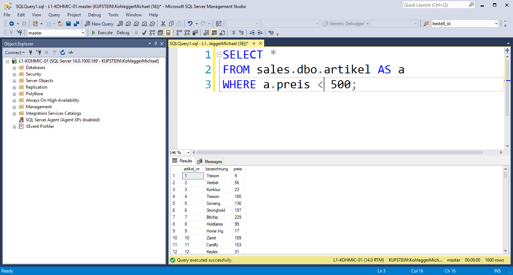
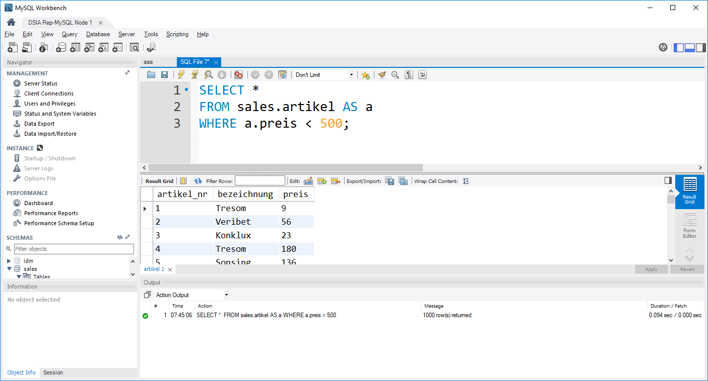
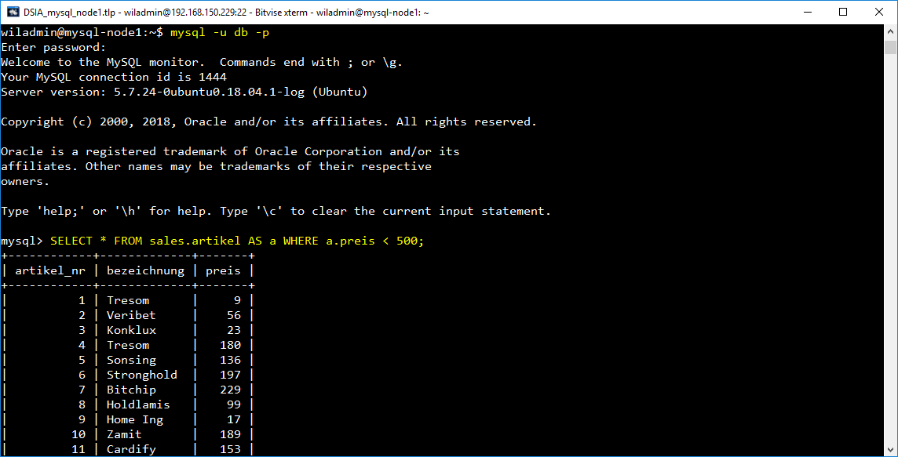
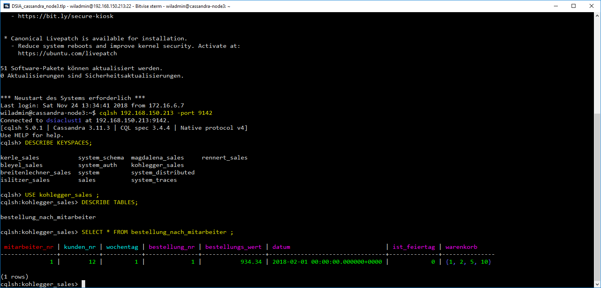
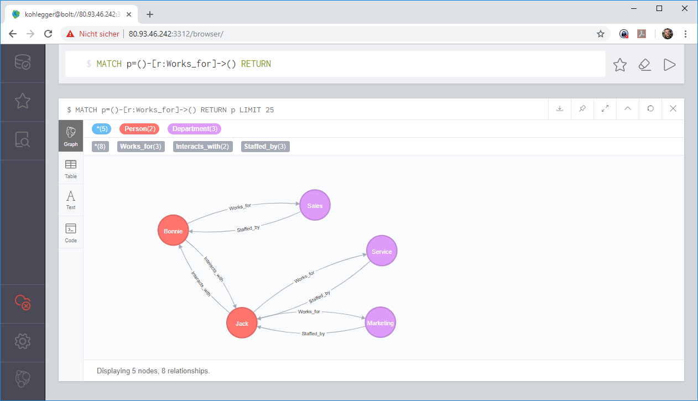
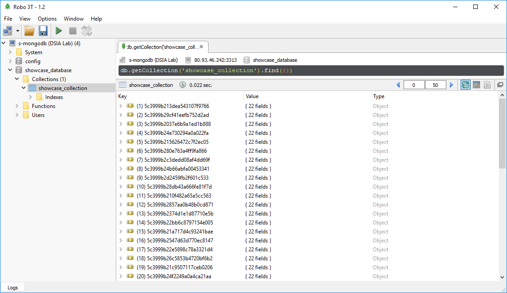
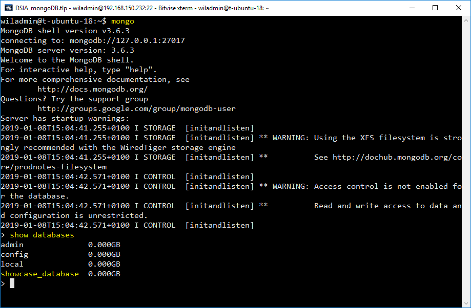

DBS Interaktion
Hier fasse ich euch noch einmal kurz und knapp zusammen, auf welche Weise ihr mit unseren DBS interagieren könnt. Dabei müssen wir zwischen unterschiedlichen DBS trennen.
Microsoft SQL Server
SQL Server ist ein DBS, das nach relationalen Grundsätzen arbeitet und wird von Microsoft vertrieben. SQL Server ist in unterschiedlichen Ausführungen am Markt erhältlich z.B. SQL Server Express (offene Version, nur relationale DBs, nutzt max. 1GB RAM) SQL Server Developer (vollständiger Funktionsumfang, "nur" zum Experimentieren), SQL Server Enterprise (vollständiger Funktionsumfang, für professionellen Einsatz).
Wir haben uns mit SQL Server nur aus der Not heraus beschäftigt, weil wir nicht auf unsern MySQL Server zugreifen konnten.
SQL Server Management Studio
Microsoft bietet passend zu seinem SQL Server das SQL Server Management Studio an. Diese Anwendung erlaubt es euch mit dem Server via SQL (und teilweise auch über grafische) Oberflächen zu interagieren.

Python pyodbc
Wenn ihr eure Daten auf einem SQL Server liegen habt, eure Analysen aber in Python machen wollt, könnt ihr euch die Daten auch direkt in Python laden. Dazu nutzen wir die ODBC-Schnittstelle (Open Database Connection) unseres SQL Servers, die wir mit Hilfe der pyodbc Bibliothek ansprechen können.
Installieren könnt ihr pyodbc direkt über pip, wenn ihr folgende Sequenz auf eurer Kommandozeile (Windows) bzw. in eurem Terminal (wenn ich auf Mac oder Linux seid) ausführt:
1 | |
Unterhalb habe ich euch beispielhaft eine Code-Schnipsel eingefügt, das eine Komplette Konversation mit meinem lokalen SQL Server zeigt.
1 2 3 4 5 6 7 8 9 10 11 12 13 14 15 16 17 18 19 20 21 22 | |
MySQL
MySQL ist, wie SQL Server, ein DBS, das nach relationalen Printzip funktioniert und wird von Oracle vertrieben. Auch MySQL kann in unterschiedlichen Ausführungen betrieben werden. Das umfasst einerseits das Lizenzmodell, aber andererseits auch die Engine, die der MySQL Server verwendet um seine Daten zu managen (die populärsten Engines sind MyISAM, InnoDB, Memory, Blackhole).
MySQL Workbench
Die Workbench ist - ähnlich wie SQL Server Management Studio - eine eigenständige Software, die es euch erlaubt mit MySQL zu interagieren. Zusätzlich zu SQL unterstütz sie euch auch durch eine grafische Benutzeroberfläche. Manche Dinge könnt ihr so auch ohne SQL-Script einstellen.

Python via mysql.connector
Diese Option ist wunderbar geeignet, wenn ihr Daten aus einem DBS laden wollt, um diese direkt in Python weiter zu verarbeiten. Mit Hilfe des mysql.connector ist das sehr einfach. Ihr könntet auch pyodbc (siehe oben) verwenden, da auch MySQL über eine Open Database Connection (ODBC) Schnittstelle verfügt. mysql.connector ist aber vor allem deshalb so praktisch, weil ihr euch dort die ganze Driver-Info sparen könnt - das Ding funktioniert eben nur mit MySQL.
So könnt ihr mysql.connector auf eurem System installieren:
shell
pip install mysql-connector
Und so könnte ein beispielhafter Datenabruf aussehen. Hier verbinde ich mich übrigens mit unserem DSIA-MySQL-Cluster im Lab. Ihr könnt natürlich je nach Anwendungsfall der connect-Methode andere Attribute übergeben...
1 2 3 4 5 6 7 8 9 10 11 12 13 14 15 16 17 18 19 20 21 22 23 24 | |
Terminal (Unix) bzw. Kommandozeile (Windows)
Das ist, sozusagen, die Basisoption, die euch immer bleibt. Sobald ihr auf einem Rechner (eigener Rechner oder auch Server) MySQL aufsetzt, wird auch der shell-Client mitinstalliert. Dieser erlaubt es euch, mit dem MySQL-Server direct auf der Kommandozeile eures jeweiligen Systems zu interagieren. Unterhalb bin ich etwa gerade mit dem Node01 unseres MySQL Clusters verbunden und führe direkt im Terminal eine SQL Abfrage aus.
Das CLI (command line interface) von MySQL kann am Hostrechner (der Rechner, auf dem der MySQL-Service läuft) mit folgendem Befehl im Terminal/Kommandozeile aufgerufen werden:
1 | |

Apache Cassandra
Apache Cassandra ist ein Wide-Column Store. Wir verwenden Cassandra um strukturierte Daten zu speichern, verzichten hier aber auf JOINS (wie sie im relationalen Modell vorkommen). In Cassandra arbeiten wir deshalb mit (mehr oder weniger) großen Einzeltabellen.
Python via dse
Der dse (DataStaxx Enterprise) driver wird von DataStaxx für die interaktion mit Apache Cassandra zur Verfügung gestellt und folgt beim Interaktionsablauf dem Modell anderer DBS-driver (z.B. ODBC).
So könnt ihr dse auf eurem System installieren. Achtung: Derzeit (2018-11-24) ist der driver offensichtlich nicht mit der aktuellen Version von Python (3.7) kompatibel. Deshalb muss der driver unter Python 3.5 oder 3.6 installiert werden.
1 | |
1 2 3 4 5 6 7 8 9 10 11 12 13 14 15 16 17 18 19 20 | |
Terminal (Unix) bzw. Kommandozeile (Windows)
Ähnlich wie in MySQL gibt es auch in Cassandra ein einfaches CLI (command line interface), das wir verwenden können um direkt am Server mit unserem Cluster zu interagieren.
Das CLI von Cassandra kann am Hostrechner (der Rechner, auf dem der Cassandra-Service läuft) mit folgendem Befehl im Terminal/Kommandozeile aufgerufen werden (hier am Beispiel des Rechners mit der IP 192.168.150.213 und dem Port 9142):
1 | |

Neo4J
Neo4J ist ein Graphen-DB (GDB) System. Anstelle von Tabellen verwendet dieses System Graphen, um Daten zu repräsentieren. Ein Graph ist eine netzartige Struktur aus Knoten (aka "Vertex") und Relationen (aka "Kante"/"Edge" bzw. "Arc" wenn mit Richtungssinn) . Knoten repräsentieren dabei Objekte, über die Daten erfasst werden sollen. Darin unterscheidet sich das Graphen-Konzept noch wenig vom relationalen oder Wide-Column-Modell. Beziehungen verbinden Knoten miteinander. Sowohl Knoten, als auch Relationen können typisiert werden.

GDBs sind besonders dann geeignet, wenn der Speicher- und Analysefokus insbesondere auf Beziehungen zwischen Datenobjekten liegt. RDBs können zwar graphenartige Datenstrukturen abbilden. Die Auswertung dieser Datenstrukturen ist aber komplizierter.
Neo4J Browser
Neo4J bietet passend zum Neo4J Server einen Web-basierten Browser, der zur Datenbankinteraktion verwendet werden kann. Mit dieser Anwendung könnt ihr Cypher-Abfrage verfassen und abschicken. Neben der Standardausgabe verfügt der Browser über eine Rendering-Engine für Graph-Daten (siehe Screenshot).

Python neo4j
Wenn ihr eure Daten auf einem Neo4J Server liegen habt, eure Analysen aber in Python machen wollt, könnt ihr euch die Daten auch direkt in Python laden. Dazu nutzen wir die Bolt-Schnittstelle unseres Servers und die neo4j Bibliothek. Im vergleich zu anderen Python-Bibliotheken ist die Struktur hier aber vor allem durch die Verwendung von Dekorator-Functions geprägt.
Installieren könnt ihr neo4j direkt über pip, wenn ihr folgende Sequenz auf eurer Kommandozeile (Windows) bzw. in eurem Terminal (wenn ich auf Mac oder Linux seid) ausführt:
1 | |
Unterhalb habe ich euch beispielhaft eine Code-Schnipsel eingefügt, das eine Komplette Konversation mit meinem lokalen SQL Server zeigt.
1 2 3 4 5 6 7 8 9 10 11 12 13 14 15 16 17 18 | |
MongoDb
Robomongo
Robomongo ist ein vollwertiger Admin-Client, der es euch erlaubt mit einem MongoDB-Server zu kommunizieren, diesen zu administrieren und Abfragen zu schicken. Er verfügt, wie andere DBS-Clients auch, über eine grafische Oberfläche und einen Objekt-Explorer (siehe Screenshot).

Python pymongo
Mit Hilfe der pymongo Bibliothek könnt ihr MongoDB auch von Python aus verwalten. Die Interaktion läuft ähnlich, wie bei anderen DBS-Bibliotheken ab. Größter Unterschied ist aber sicherlich, dass weder Datenbanken, noch Collections bewusst erzeugt werden müssen. Stattdessen werden diese angelegt, wenn ihr sie verwendet und sie bisher noch nicht existieren.
Installieren könnt ihr pymongo direkt über pip, wenn ihr folgende Sequenz auf eurer Kommandozeile (Windows) bzw. in eurem Terminal (wenn ich auf Mac oder Linux seid) ausführt:
1 | |
Unterhalb habe ich euch beispielhaft eine Code-Schnipsel eingefügt, das eine Komplette Konversation mit einem remoten MongoDB Server zeigt.
1 2 3 4 5 6 7 8 9 10 11 12 13 14 15 16 17 18 19 20 21 22 23 24 | |
Terminal (Unix) bzw. Kommandozeile (Windows)
Ähnlich wie in MySQL und Cassandra gibt es auch bei MongoDB ein einfaches CLI (command line interface), das wir verwenden können um direkt am Server mit unserem Cluster zu interagieren.
Das CLI von MongoDB kann am Hostrechner (der Rechner, auf dem der MongoDB-Service läuft) mit folgendem Befehl im Terminal/Kommandozeile aufgerufen werden (hier am Beispiel des Rechners mit der IP 192.168.150.232):
1 | |
